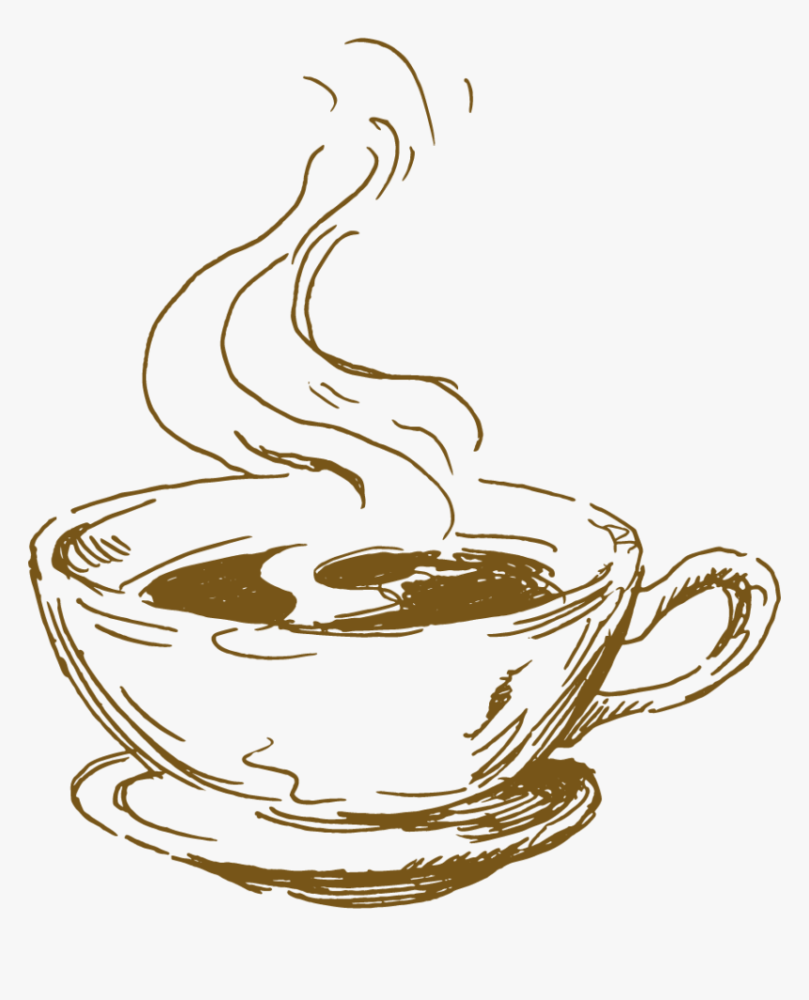
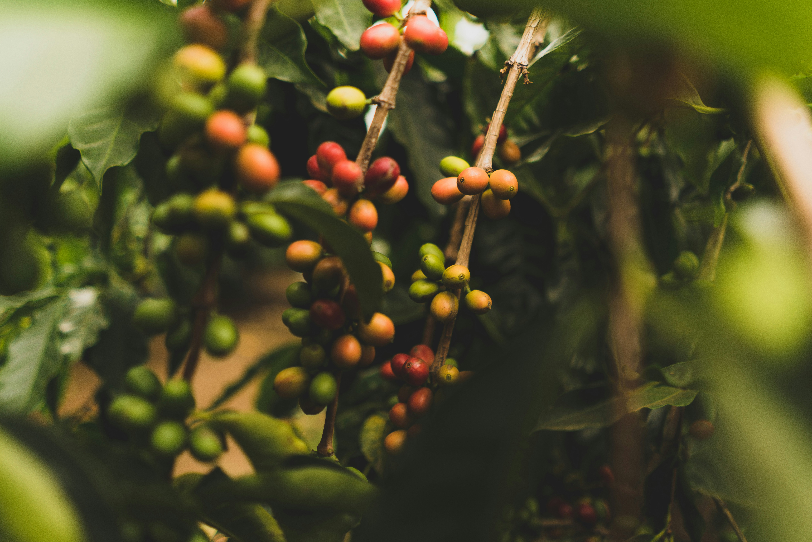
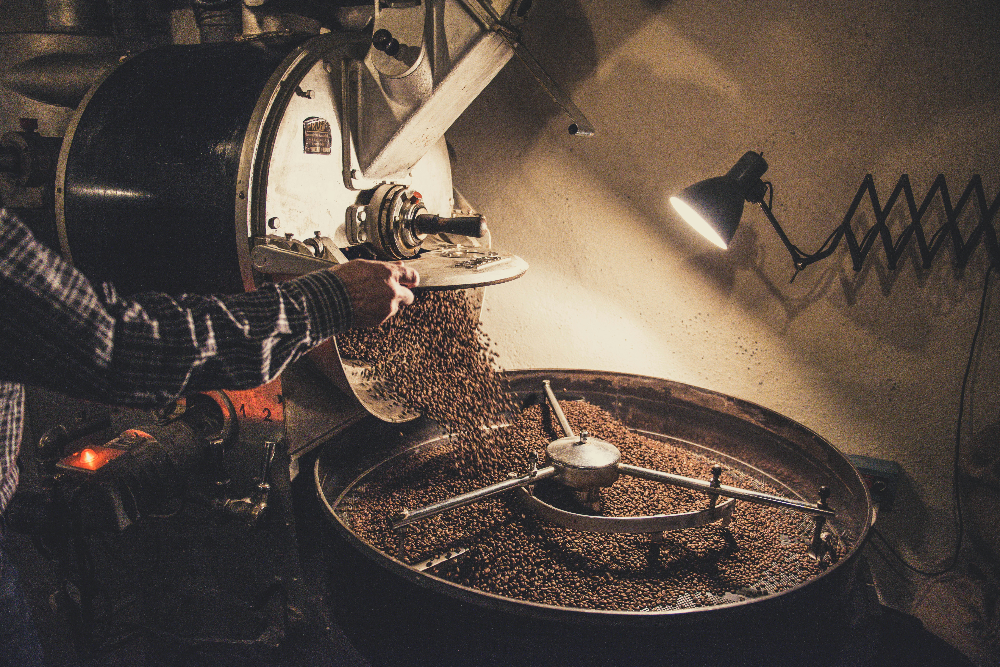
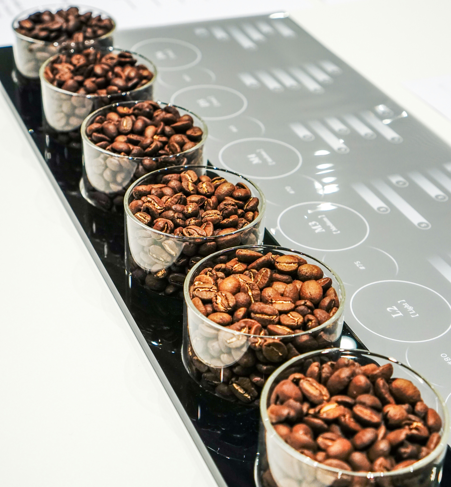
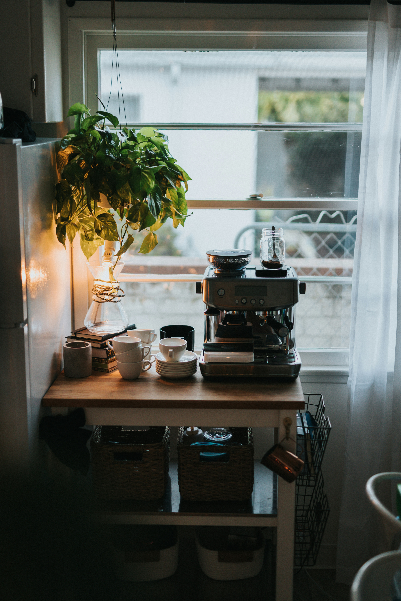
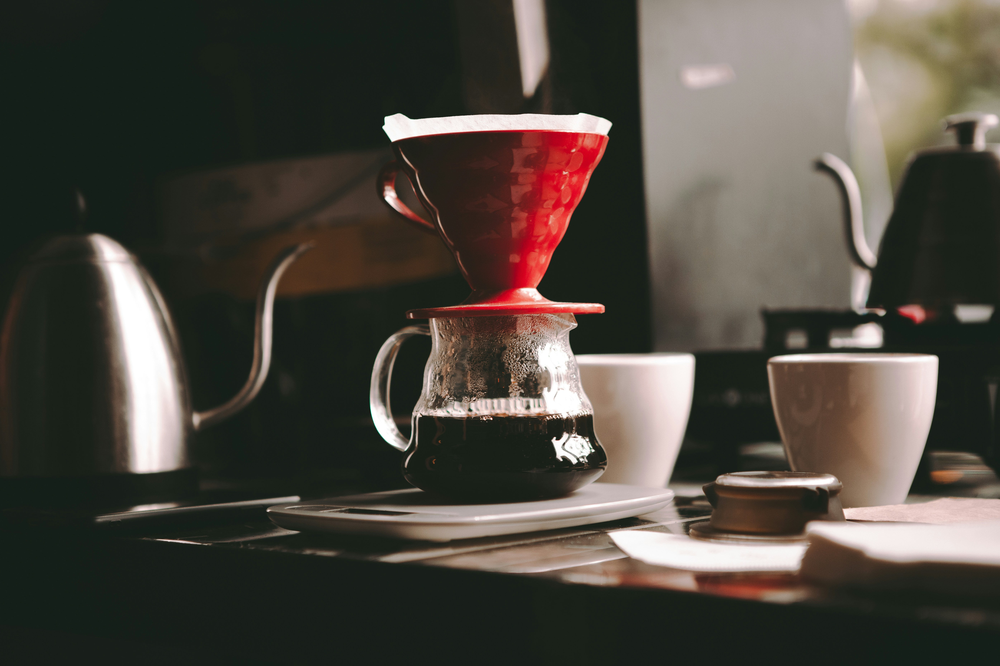

Coffee Drinks, Decoded

Understand the differences between espresso, Americano, latte, and cappuccino.
Learn more

🛒Ready to bring that feeling of Uno Mas home!?
Explore the essentials!There's always more to discover about coffee. From understanding different beans and processing methods to dialing in your brewing technique, we're here to help you explore the details behind every cup. Whether you're just getting started or looking to deepen your knowledge, there's always room for Uno Más.
Explore the world of coffee
Understand the differences between espresso, Americano, latte, and cappuccino.
Learn more

Explore how coffee is grown, harvested, processed, and roasted.
Learn more

Learn about roast levels, tasting notes, and choosing beans for your preferred brew.
Learn more
Explore brewing methods, coffee-to-water ratios, grind size, and extraction.
Learn more
At Uno Más, we believe coffee is about more than what's in your cup. It's about the conversations that run a little longer, the people you meet, and the moments you wish didn't have to end. We imagined a space where everyone feels welcome to slow down, connect, and enjoy one more cup. But we also believe that great coffee shouldn't be limited to cafés. Through approachable guides, brewing techniques, and a little experimentation, we want to help you bring that café experience home. Whether you're here to discover something new, improve your brewing, or simply enjoy the moment, there's always room for Uno Más.
Care to learn more about the brand!?